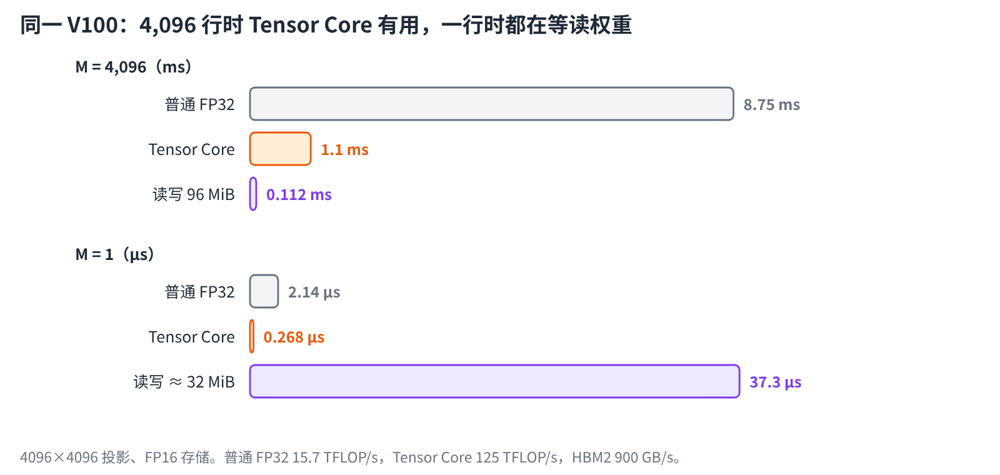
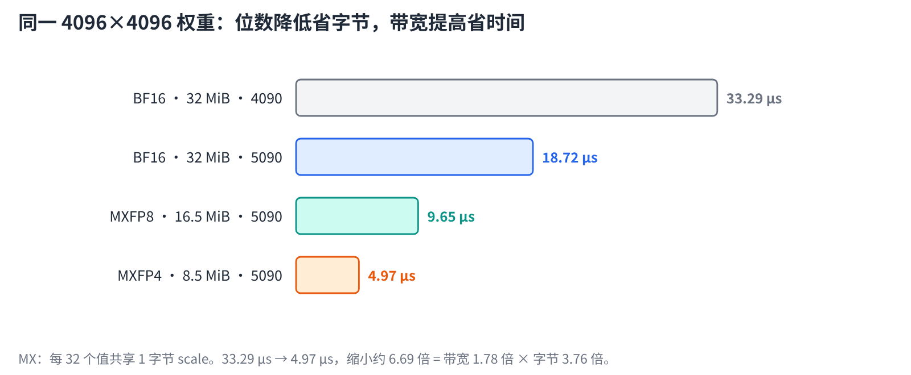
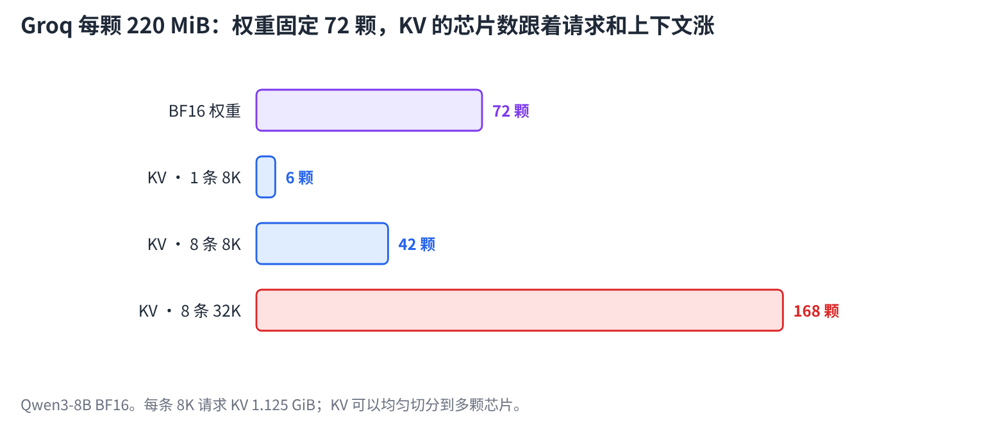
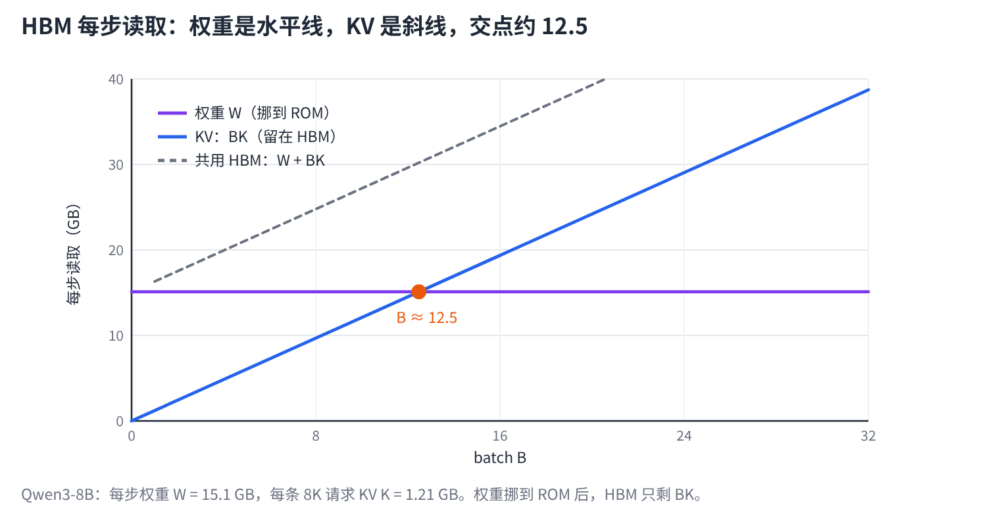
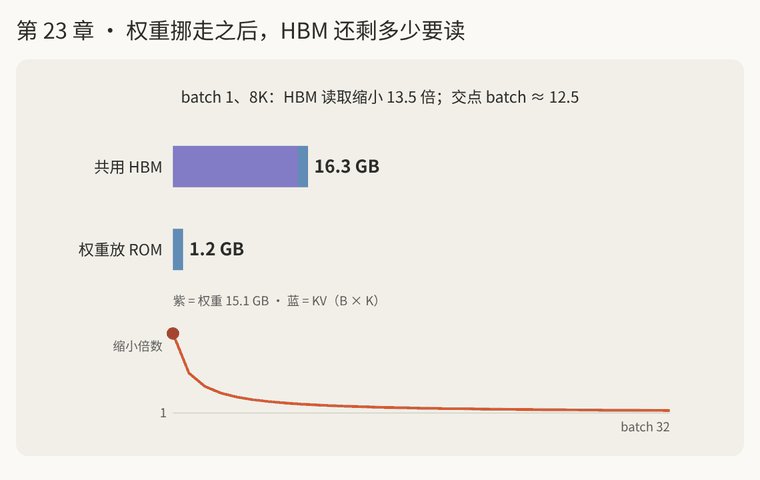

第 23 章 · 架构演进与专用架构：每一代新增的东西，省掉了哪一笔
本地运行
git clone https://github.com/wikieden/ai-infra-from-constraints
cd ai-infra-from-constraints/code/notebooks
pip install jupyterlab torch numpy
jupyter lab ch23_architecture_evolution.ipynb也可以下载后直接用 VS Code 打开 .ipynb 运行。需要 GPU 的章节在 Colab 里选「代码执行程序 → 更改运行时类型 → GPU」。
本章回答：Tensor Core、BF16、FP4、TMA、统一内存，这些新增的东西各自让哪一项时间变短？为什么同一项改进对大 batch 很有用、对单行调用几乎没用？把权重放到片上 SRAM 或只读 ROM，又换来了什么代价？
讲解日期：2026-11-24 · 上一章：第 22 章 多芯片封装与互联 · 下一章：第 24 章 根据架构选择加速器
对应原文：materials/ai-infra-book/manuscripts/04-加速器架构.md§4.6–§4.7 L731–L959（图 4-30 到 4-38）
本章缩写：BF16 = Brain Float 16（Google Brain 提出的 / 浮点 / 16 位）· CV = Cube–Vector（昇腾矩阵单元与向量单元）· ECC = Error-Correcting Code（纠错 / 码）· FMA = Fused Multiply-Add（融合 / 乘 / 加）· IPU = Intelligence Processing Unit（智能 / 处理 / 单元）· MIG = Multi-Instance GPU（多 / 实例 / GPU）· MX = Microscaling（微缩放，每 32 个值共享一个 scale）· ROM = Read-Only Memory（只读 / 存储器）· SRAM = Static Random-Access Memory（静态 / 随机访问 / 存储器）· TF32 = TensorFloat-32（Tensor Core 用的 19 位格式）· TMEM = Tensor Memory（张量 / 存储）· TPU = Tensor Processing Unit（张量 / 处理 / 单元）· TSP = Tensor Streaming Processor（张量 / 流 / 处理器）。全部缩写见 缩写与术语表
第 19–22 章把计算、存储、搬移和互联拆开讲完了。本章换个角度：每一代硬件新增了什么，减少的是哪一笔时间或哪一份容量。比较的规矩始终一样：模型工作量不变，只改正在考察的那一项。
讲解
第一步：Tensor Core 的收益，取决于你是不是被计算卡住（2026-11-24）
类比：给厨房换了更快的灶。 一次炒 4,096 份菜，灶快八倍，出菜就快八倍；只炒一份菜，时间都花在去仓库取料上，灶再快也没用。
原文 L739–L743：V100 SXM2 上，普通 FP32 峰值 15.7 TFLOP/s，Tensor Core（FP16 输入、FP32 累加）125 TFLOP/s，HBM2 900 GB/s。还是 \(4096 \times 4096\) 的 Q 投影，FP16 存：
| 行数 \(M\) | 普通 FP32 路径 | Tensor Core | 读写数据 | 谁慢 |
|---|---|---|---|---|
| 4,096（137.4 GFLOPs，96 MiB） | 8.75 ms | 1.10 ms | 0.112 ms | 计算 |
| 1 | 2.14 μs | 0.268 μs | 37.3 μs | 读权重 |

图 23-1 · 上下两组单位不同（ms 和 μs）。同一项改进只对被计算卡住的那一组有用；这正是第 19 章算术强度的结论在代际演进里的体现。
一句话：专门的矩阵单元只缩短计算时间；单行调用要的是更快地读权重。
第二步：精度和产品线：同一份权重，读的字节在变（2026-11-24）
类比：同一本书换成小字号印。 页数少了，搬起来快了；字号太小会看错，所以每 32 个字配一个"放大倍数"（scale）。
每代加了什么精度（原文 L749）：Turing 加 INT8 / INT4；Ampere 加 BF16、TF32 和 2:4 结构化稀疏；Hopper 的 Transformer Engine 管 FP8 和缩放；Blackwell 支持分块缩放和 FP4。
BF16 换的是范围：和 FP16 一样两字节，但 8 位指数，最小正规数约 \(1.18 \times 10^{-38}\)（FP16 约 \(6.10 \times 10^{-5}\)，次正规最小约 \(5.96 \times 10^{-8}\)）。\(10^{-8}\) 的梯度在 FP16 里变成 0，BF16 还在。代价是 1 附近相邻数间隔 \(2^{-7}\)（FP16 是 \(2^{-10}\)），所以累加仍用 FP32。
MX 格式换的是字节（原文 L753）：每 32 个值共享 1 字节 scale：
| 格式 | 4096×4096 权重 | RTX 4090 读 | RTX 5090 读 |
|---|---|---|---|
| BF16 | 32 MiB | 33.29 μs | 18.72 μs |
| MXFP8 | 16 + 0.5 = 16.5 MiB | ||
| MXFP4 | 8 + 0.5 = 8.5 MiB | 4.97 μs |

图 23-2 · 从 4090 BF16 到 5090 MXFP4，前一步靠带宽，后一步靠位数。原生低精度矩阵路径直接吃压缩格式，省掉先展开成高精度副本那一步（第 20 章）。
矩阵前后的准备也在被硬件接走：Ampere 异步拷贝（省寄存器中转）→ Hopper TMA（多维地址生成）→ Blackwell SM100 的 TMEM（累加结果单独存放：第 21 章 160 KiB 的工作集里，64 KiB 累加器移出通用寄存器）。Rubin 再把指数吞吐提高 2–4 倍（针对第 20 章 Softmax 的瓶颈），并让 TMA 直接更新 MoE 专家的地址。
产品线对比（原文 L771–L789，BF16 输入、FP32 累加、稠密）：
| 换代 | 矩阵速率 | 带宽 | 改变的是 |
|---|---|---|---|
| 3090 → 4090 | 2.33 倍 | +7.7% | 大矩阵计算 |
| 4090 → 5090 | 1.27 倍 | 1.78 倍，容量 24 → 32 GB | 单行读取、驻留 |
| A100 → H100 | 3.17 倍 | 1.64 倍 | 计算和执行组织一起改 |
| H100 → H200 | 不变 | 1.43 倍，容量 80 → 141 GB | 只加存储 |
数据中心卡还多 NVLink：64 MiB 在 A100 / H100 上分别约 224 / 149 μs（第 22 章的 \(V/R\)）。RTX 4090、5090 没有 NVLink。SM120（消费级、工作站 Blackwell）和 SM100（数据中心，带 TMEM）是两套指令架构，kernel 要分开编。
一句话：精度变低省字节，带宽变高省时间，两者相乘；产品线之间先看改的是矩阵、带宽还是容量。
第三步：昇腾（略讲）：从卷积展开到矩阵—向量交接（2026-11-24）
类比：流水线上两道工序之间放了个周转箱。 箱子要先搬回仓库再搬出来，工序再快也要等搬运；在两道工序之间直接开个窗口递过去，就省了来回。
原文 L791–L842 的两次改造，各一个数：
- 卷积时代（910）：\(3 \times 3\) 卷积显式展开成 \(3136 \times 576\) 矩阵，3.445 MiB，是输入的九倍；在 HBM 里生成再读回要多写读 6.891 MiB，约 6.02 μs。MTE 在片上展开窗口，省掉这次外存往返。
- 注意力时代：一个 \(128 \times 128\) 的块，QK 和 PV 在 Cube 上约 1.024 μs（1 GHz），但分数和概率要交给 Vector 做 Softmax。经外层接口交接共 256 KiB，按每核 94 GB/s 要 2.79 μs，比矩阵本身还长。910B / 910C 把矩阵核（AIC）和向量核（AIV）分开控制，让两者在不同块上交错；950 加 CV 直通，外层 256 KiB 写读变成 128 KiB 的直接传递，1.024 μs 内完成只需 128 GB/s。
一句话：矩阵越快，前后的交接越显眼；昇腾每代改的都是交接那一段。
第四步：Apple 统一内存：容量决定能不能跑，带宽决定跑多快（2026-11-24）
类比：仓库变大，货能多放；出货口变宽，才出得快。
原文 L844–L866：
- 容量翻倍不改时间：M3 Ultra 256 GB → 512 GB，带宽都是 819 GB/s，同一个任务的 \(V/R\) 不变。
- Qwen3-8B 单请求 8K，每步读 16.345 GB：M1 / M2 Ultra（800 GB/s）20.43 ms，M3 Ultra（819）19.96 ms，M4 Max（546）29.94 ms。同样 128 GB，M1 Ultra 比 M4 Max 每步少约 9.5 ms。
- 大 MoE 才用得上容量：Qwen3-235B-A22B 4-bit 常驻约 123.1 GB，加 KV 和工作区约 126.9 GB，128 GB 的机器放不下（再给系统留 8 GB 更不够）；256 / 512 GB 可以。每步只读选中的专家约 13.697 GB，M3 Ultra 约 16.72 ms，而不是把 123 GB 读一遍的约 150 ms。
- 路由决定读多少：八请求集中 / 分散路由每步读 24.737 / 75.967 GB，约 265 / 86 token/s（第 11 章的 \(U\) 在这里又出现了）。
- M3 / M4 的 Dynamic Caching 管 GPU 局部资源；M5 在每个 GPU 核里加 Neural Accelerator。基础 M4 → M5 带宽 120 → 153 GB/s，单行投影读 32 MiB 从 279.6 → 219.3 μs；GPU AI 峰值涨四倍多，单行调用照样由带宽决定，和第一步 V100 是同一回事。
场景代码：在 Mac 上用 MLX 跑模型，统一内存里模型直接给 GPU 用，不需要 .to("cuda") 这一步（真实 API）：
import mlx.core as mx
from mlx_lm import load, generate
model, tokenizer = load("mlx-community/Qwen3-8B-bf16") # 权重直接落在统一内存
print(mx.metal.get_active_memory() / 1e9, "GB") # 看占了多少
generate(model, tokenizer, prompt="hello", max_tokens=64, verbose=True) # verbose 会打印 tokens-per-sec
一句话：全部权重决定要多大内存，每步选中的那部分决定要多大带宽。
第五步：TPU、Groq、Cerebras：把数据留在片上（2026-11-24）
类比：车间里每台机床旁边都放个小货架。 常用的零件就近取；可是一台机床旁边空着，另一台堆满了，空位也挪不过去。
TPU v1（原文 L878–L888）：\(256 \times 256\) 个乘加单元的阵列。一块 8-bit 权重 64 KiB；处理一行输入是每字节 2 次运算，处理 256 行是 512 次。权重不动、输入连续流过阵列，就是第 19 章的复用。连续计算的块越多，流水线填充和排空分摊得越薄。
分布式片上存储（原文 L890–L902）：Groq TSP 由编译器预排每个张量的生成、传输和使用时刻；Graphcore IPU 由许多带局部存储的 tile 组成；Cerebras WSE-3 在晶圆上铺了 44 GB SRAM。难点是容量不能互相借，而且会写的状态一直在长。
例子：Groq 每颗芯片 220 MiB SRAM，Qwen3-8B 每条 8K 请求的 BF16 KV 是 1.125 GiB：
| 要放的东西 | 芯片数 |
|---|---|
| BF16 权重 16.4 GB | 72 |
| 1 条 8K 请求的 KV（1,152 MiB） | \(\lceil 1152 / 220 \rceil = 6\) |
| 8 条 8K 请求（9 GiB） | 42 |
| 8 条 32K 请求 | 168 |

图 23-3 · 权重没变，涨的是可写状态。芯片多了，分散在各芯片上的 KV 又要跨芯片汇集。
一句话：片上存储省掉了远距离读取，但容量分散、不能互借，长上下文的 KV 会把芯片数顶上去。
第六步：固定权重放 ROM：HBM 只留给 KV（2026-11-24）
类比：把教科书印死在墙上，书包里只放作业本。 书包轻了很多；但作业本越写越多，人一多，书包又重起来。
原文 L922–L958：作者的 OpenTallas 项目研究把不变的权重放进掩模 ROM（制造时就写死内容的只读存储），HBM 只放 KV。Qwen3-8B 每步读权重 \(W = 15.1\) GB，每条请求读 8K 的 KV \(K = 1.21\) GB：
| batch \(B\) | 共用 HBM 每步读 | ROM 方案 HBM 读 | 缩小 |
|---|---|---|---|
| 1 | 16.3 GB | 1.21 GB | 13.5 倍 |
| 16 | 34.5 GB | 19.3 GB | 1.8 倍 |
交点 \(BK = W\)：\(B \approx 12.5\)，从 13 起 KV 读取比权重多。上下文到 32K，交点降到约 3.1。

图 23-4 · batch 已经把权重分摊给更多请求，再把权重挪走，收益就小了。
两条接口可以同时读：\(t_{\mathrm{memory}} \ge \max(W/\beta_{\mathrm{ROM}},\ BK/\beta_{\mathrm{HBM}})\)。目标单用户 10,000 token/s 时，每 token 100 μs，光读 1.21 GB KV 就要 12.1 TB/s 的 HBM。容量上，一堆 24 GB HBM3E 扣 2 GiB 工作区能放 18 条 8K 请求，原来还要放权重时只有 4 条。
算力也要按时限配：一组 15,134,641,792 次运算，每条通道 1 GHz 每周期一次 FMA（2 次运算），100 μs 内做完要 \(\lceil 15.13 \times 10^9 / (2 \times 10^9 \times 10^{-4}) \rceil = 75{,}674\) 条通道；只给 40 μs、利用率 60%，要 315,306 条。
专用化的账（原文 L910–L916 的表）：硬件省掉的工作，软件都要在编译或部署时补上：
| 专用化方式 | 硬件省掉 | 软件要安排 |
|---|---|---|
| 专用矩阵指令 | 每次乘加的指令与控制 | 分块、对齐、精度、尾块 |
| 矩阵—向量直接交接 | 中间结果的外层写读 | 格式布局匹配、完成事件 |
| 指定的局部存储 | 重复访问远端存储 | 张量放置、容量、槽位复用 |
| 编译期通信调度 | 运行时逐项调度 | 依赖顺序、形状变了要重编 |
| 固定权重 | 可写权重的存储与读取 | 模型版本、部署周期 |
一句话：权重固定以后 HBM 只装 KV；batch 越大、上下文越长，省下的比例越小，换模型还得重做芯片。
动画演示：权重挪走之后，HBM 还剩多少要读

可交互版：animations/23-architecture-evolution.html（滑块：batch 1–32；上下文 8K / 16K / 32K）。
怎么看：
- 上面一根横条：权重和 KV 共用 HBM，权重一段（灰）是固定的，KV 一段（蓝）随 batch 变长；
- 下面一根：权重移到 ROM，HBM 只剩 KV（第六步）；
- 右边显示缩小倍数 \(1 + W/(BK)\) 和交点 batch；
- 播放时 batch 1 → 4 → 13 → 32：倍数从 13.5 掉到 1.4 左右；把上下文拨到 32K，交点提前到 3–4。
练习与作答记录
题 1（第一步）：一张卡普通路径 20 TFLOP/s、矩阵单元 200 TFLOP/s、带宽 2 TB/s，算 \([M, 8192] \times [8192, 8192]\) 的 BF16 投影。\(M = 1\) 和 \(M = 2048\) 时，两条计算路径和读写各多少？哪种情况下矩阵单元有用？
作答记录：（待作答）
题 2（第二步）：一个 \(8192 \times 8192\) 的权重，BF16、MXFP8、MXFP4 各占多少 MiB？在 3.35 TB/s 的卡上读各要多久？
作答记录：（待作答）
题 3（第五步）：每颗芯片 256 MiB SRAM。一条请求的 KV 是 2.5 GiB，16 条请求要多少颗芯片放 KV？上下文翻倍呢？
作答记录：（待作答）
题 4（第六步）：\(W = 30\) GB、每条请求 \(K = 2\) GB。\(B = 2\) 和 \(B = 30\) 时，把权重挪到 ROM，HBM 读取各缩小几倍？交点 batch 是多少？
作答记录：（待作答）
口诀
灶快只帮大锅菜，一份菜还得跑仓库；
小字号省纸，三十二字配个放大镜；
仓库大能多放，出货口宽才出得快；
机床旁货架不能互借，作业本越写越厚；
书印在墙上，人一多书包照样重。
本章复习卡片
I86（Tensor Core 只缩短计算：V100 两种行数）、I87（BF16 换范围、MX 换字节：6.69 = 1.78 × 3.76）、I88（昇腾交接 256 KiB vs CV 直通 128 KiB）、I89（统一内存：容量 vs 带宽，MoE 全部权重 vs 选中专家）、I90（片上 SRAM：权重固定、KV 涨芯片数）、I91（固定权重 \(1 + W/(BK)\) 与交点）。练习做完后，按答错、卡住的地方再补。
附录 · 延伸阅读
留给以后深入学习用，不影响本章主线。★ 是建议先读的。
推荐阅读
| 读什么 | 读哪里 | 读它为了什么 |
|---|---|---|
| ★ AII 第 4 章 | §4.6–§4.7 L731–L959 | 本章原文，图 4-30 到 4-38 |
| 《CUDA 从线程到 Tensor Core》第 15、17、20 章 | Tensor Core、TMA、tcgen05 / TMEM | NVIDIA 这几代新增部件的编程面 |
| Volta / A100 / H100 架构白皮书 | Tensor Core 与数值格式 | 原文 [^volta-evolution] [^nvidia] |
| OCP Microscaling Formats (MX) v1.0 规范 | 格式定义 | MXFP8 / MXFP4 的分组与 scale |
| Jouppi 等，TPU v1，ISCA 2017 | §2 架构 | 256×256 阵列、权重 FIFO（原文 [^tpu]） |
| Groq TSP 论文、Cerebras WSE-3 数据表 | 存储与调度 | 分布式片上存储（原文 [^special]） |
| DaVinci 架构论文 | §3.1–§3.4 | 昇腾 Cube / Vector / MTE（原文 [^ascend-history]） |
数学原理
- 比较的规矩：模型工作量不变，只换一项硬件或表示；时间 \(= \max(F/P,\ V/R)\)。
- 收益相乘：\(V\) 缩小到 \(1/a\)、\(R\) 提高到 \(b\) 倍，读取时间缩小到 \(1/(ab)\)。
- 上取整：芯片数 \(= \lceil \text{状态} / \text{每颗容量} \rceil\)；通道数 \(= \lceil \text{运算} / (2 f t u) \rceil\)。
公式清单
| 公式 | 意思 |
|---|---|
| MX 存储 \(= n \cdot b/8 + n/32\) 字节 | 每 32 值 1 字节 scale |
| \(S_{\mathrm{HBM}} = 1 + W/(BK)\) | 权重移到 ROM 后 HBM 读取缩小倍数 |
| \(B^* = W/K\) | 权重与 KV 读取相等的 batch |
| \(t_{\mathrm{memory}} \ge \max(W/\beta_{\mathrm{ROM}},\ BK/\beta_{\mathrm{HBM}})\) | 两条接口并行 |
| \(n_{\mathrm{lane}} \ge \lceil F / (2 f t u) \rceil\) | 按时限配算力 |
代码对照：把本章的数字用代码算一遍
纯 Python，不需要 GPU。代码在仓库本地
ai-infra/solutions/chapter-code/ch23_architecture_evolution.py，配套测试tests/test_ch23.py：
bash cd ai-infra/solutions/chapter-code uv run python ch23_architecture_evolution.py # 一步一步打印 uv run pytest tests/test_ch23.py
讲义 ↔ 代码：
| 讲义 | 公式 | 写法 | 跑出来 |
|---|---|---|---|
| 第一步 V100 | \(F/P\)、\(V/R\) | v100_paths(m) |
8.75 / 1.10 / 0.112 ms；2.14 / 0.268 / 37.3 μs |
| 第二步 MX | 位数 + scale | weight_mib(bits)、read_us(mib, bw) |
32 / 16.5 / 8.5 MiB；33.29 → 4.97 μs |
| 第三步 昇腾 | 字节 ÷ 时限 | handoff_gbps(256, 1.024) |
256 / 128 GB/s；2.79 μs |
| 第五步 Groq | 上取整 | chips_needed(gib) |
72 / 6 / 42 / 168 颗 |
| 第六步 ROM | \(1 + W/(BK)\) | rom_ratio(b)、lanes_needed(...) |
13.5 / 1.8 倍；75,674 / 315,306 条 |
关键几行：
def rom_ratio(b, w=15.1, k=1.21):
return 1 + w / (b * k) # 共用 HBM 的读取 / 只读 KV 的读取
def lanes_needed(ops, budget_s, util=1.0, hz=1e9):
return math.ceil(ops / (2 * hz * budget_s * util)) # 每通道每周期一次 FMA = 2 次运算
代码里才看得到的 3 件事：
- V100 的 4,096 行读写是 \((2 \times 4096^2 + 4096^2) \times 2 = 96\) MiB，除以 900 GB/s 得 0.112 ms；单行时只剩权重 32 MiB 加两行输入输出。
- 32K 时交点代码算出 3.12，原文写约 3.13：原文的 \(K\) 没有取整到 1.21 GB。
- Groq 的 72 颗按 16.4 GB 权重（\(10^9\) 制）除以 220 MiB（\(2^{20}\) 制）得 71.1，再上取整。
自己改一改（不影响练习答案）：
- 把
v100_paths改成 H100（BF16 989.4 TFLOP/s、3.35 TB/s），求计算和读写相等的行数。 - 给
rom_ratio加一个上下文参数，画出 8K / 32K / 128K 三条曲线。 - 用
chips_needed算 Cerebras WSE-3（44 GB）能放几条 8K 请求的 KV。